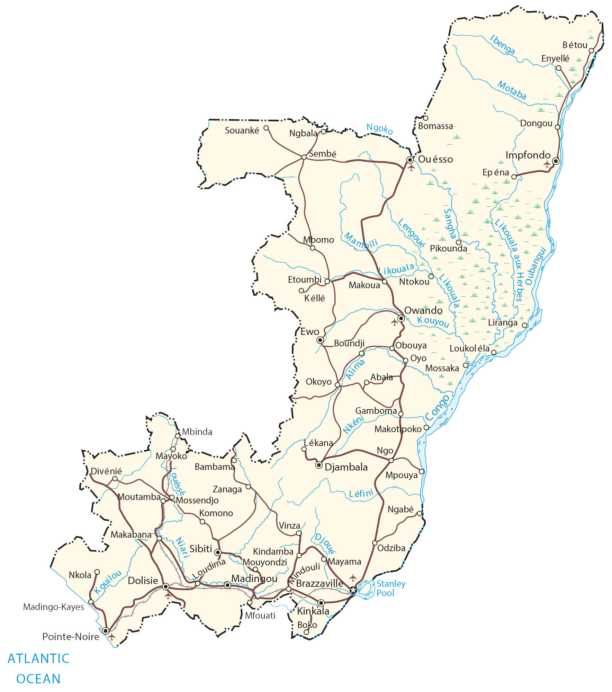

he Republic of Congo (also known as the Congo) is located in west-central Africa, along the equator between 4°N and 5°S latitude. It’s not completely landlocked because Congo has a 169 kilometers (105 mi) coastline with the Atlantic Ocean. Brazzaville is the capital and largest city in the southeast corner of the country. Approximately 5.4 million people live in the Republic of Congo and its official language is French.
Congo borders Gabon to the west, Cameroon to the northwest, the Central African Republic to the north, the Angola exclave of Cabinda to the southwest, and DR Congo to the east, separated by the Congo River.
Go back home